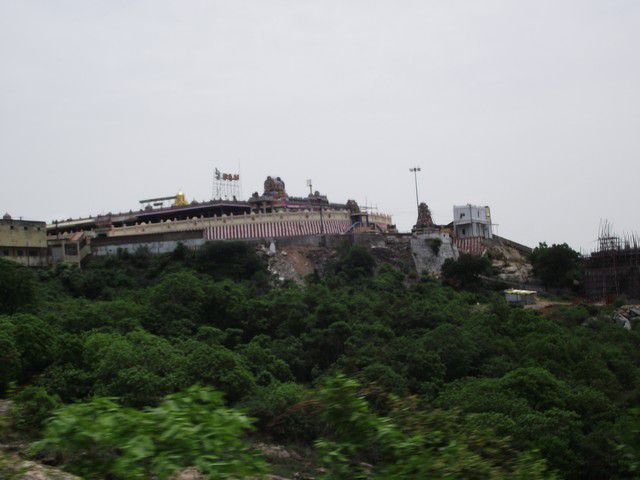

Thiruthani Murugan Temple
Thiruthani Murugan Temple also known as Sri Subrahmanya Swami Kovil is located on the hill of Thiruthani in Tamilnadu, dedicated to Lord Murugan and also one of the ‘Arupadai Veedu Temples’. As this Thiruthani Murugan Temple is located on the hill about 700 feet above the sea level, devotees have to climb 365 steps to reach the temple, which indicates 365 days of the year. Famous religious places surrounds this temple such as Kancheepuram on the south, Sholingar and Vallimalai on the West, Tirupati and Kalahasti on the North, Tiruvalangadu on the East.
The presiding deity of this Thiruthani Murugan Temple is Lord Subramanya Swamy(Lord Murugan), and the sanctum of Lord Murugan is made of 1 lakh Rudrakshas. The other important deities of this temple are Lord Shanmughar, Goddess Valli, and Goddess Deivayani. The mythology says that the Lord Murugan rested at Thiruthani hill to reduce His anger after destroying the demon King Surapadma in Thiruchendur and hence the place is known as ‘Thanigai malai’. Thiruthani Murugan Temple is also called by the names Purnagiri, Kshanikachalam, Mooladri, Neelotpala, Shantipuri (abode of peace). Among the six adobes of Lord Murugan, Thiruthani temple ranks leading because it is said that He blesses with mental peace and happiness as Lord Murugan rested and cooled at this place after killing the demon King Surapadma.
It is also said that when Lord Murugan married Goddess Deivayani, daughter of Lord Indra, the king of the gods. Lord Indra presented them an elephant named as ‘Airavadham’ as a part of His dowry offerings. On the departure of the elephant Airavadham, presented by the Lord Indra, Lord Indra found that His wealth has been diminished. Upon this, Lord Murugan said to return the elephant Airavadham to Lord Indra. But Lord Indra refused to accept it and demanded that the elephant face His direction. Hence the elephant Vahan is facing the opposite direction (east) in this temple, while in other temples ‘Vahans of the deities’ faces towards the Lord in the sanctum. In this temple it can be noticed that there is a scar on the chest of Lord Murugan, caused by the demon Tarakasuran on throwing the discus on Lord Muragan’s chest. And it is said that the discus is gifted to Lord Vishnu. Lord Murugan in this temple is regarded by many names like Skanda, Karthikeya, Veeramurthy, Gnanamurthy, and Acharyamurthy because He proclaimed the knowledge of Tamil to the sage Lord Agasthyar. Lord Murugan is not holding His Vel weapon in this temple, unlike other temples. Instead, He holds ‘Vajra Hastam’ in his right and placing left hand on the hip, which represents Gnana Shakti (Power of wisdom). The Sura Samhara festival (festival of destroying the demon Surapadma) celebrated grandly in all the Murugan temples is not celebrated here, because Lord Murugan rested here to get peaceful mind without any violence.